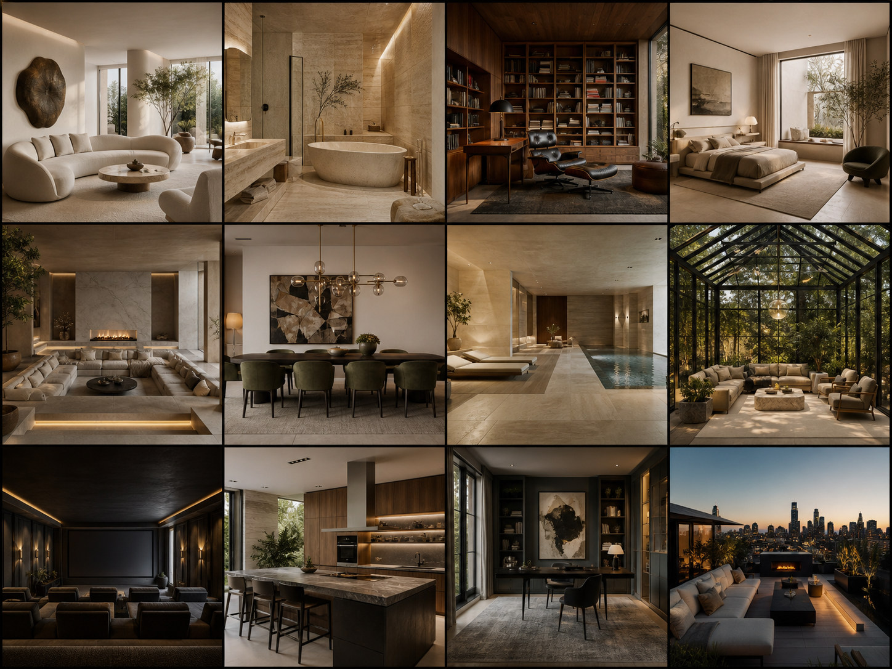

Ambient Intelligence
An AI system that learns a household's rhythms and quietly adjusts lighting, temperature, privacy and sound to match the moment.
Explore concept →Intelligence meets experience
Future-facing technology concepts for homes, spaces and everyday luxury.

An AI system that learns a household's rhythms and quietly adjusts lighting, temperature, privacy and sound to match the moment.
Explore concept →
Responsive surfaces imagined to regulate light, improve acoustic comfort and make premium interiors perform as beautifully as they look.
Explore concept →
A future living environment where subtle spatial interfaces bring information, entertainment and control into the architecture itself.
Explore concept →